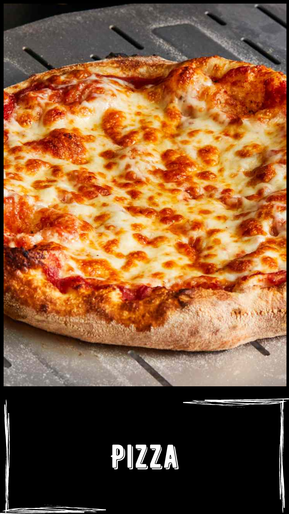

Resep:
- Campur jadi satu terigu, gula dan ragi instan.
- Tambahkan air sedikit demi sedikit sambil uleni hingga kalis.
- Tambahkan margarin dan garam, uleni hingga kalis elastis.
- Diamkan adonan selama 30 menit hingga mengembang dua kali lipat. Kempiskan adonan bagi adonan 30 gr.
- Giling tipis adonan, letakkan di loyang pizza mini yang sudah dioles margarin. Tusuk-tusuk dengan garpu.
- Istirahatkan kembali sampai mengembang kira-kira 30 menit.
- Oven dengan api bawah dengan suhu 170 derajat Celcius hingga setengah matang.
- Pizza siap diberi topping kesukaan masing-masing.